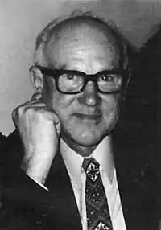
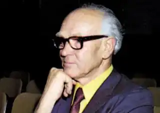
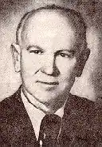

У своїй автобіографічній повісті "Від Зінькова до Мельборну" Дмитро Нитченко, який побачив світ у лютому тепер вже далекого 1905 року писав: "… Народився я в Зінькові 8-го лютого старого стилю на Полтавщині в родині хліборобів.
Зіньків був повітовим містом, мав з 10 тисяч населення. У Зінькові було 7 чи 8 церков. Ще до революції були жіноча й чоловіча гімназії та низка шкіл. За радянських часів, замість гімназії, були Індустріяльно— технічна школа та аґрономічна. Казав мій дід, що колись через Зіньків проїздив Тарас Шевченко. А сама назва нібито пішла від імени жінки, яку звали Зінька і яка одна з перших тут поселилась і жила над дорогою з Полтави до Гадячого.
На цьому місці й постав пізніше Зіньків… У Зінькові жив материн батько, Яків Линник, тому і я там народився, бо в Зінькові була лікарня, а одна з материних сестер, а також її чоловік були лікарями. То був лікар Дмитро Нагорний з дружиною Галею. Але батькова земля була за 14-15 кілометрів від Зінькова. Тож батько разом з усією родиною завжди працював весною та влітку на полі, був хліборобом. Сам під час жнив працював на косарці, сам часто орав землю. Під час жнив і мати, і ми, як підросли, маючи 8-10 років, в’язали снопи, гребли сіно, пасли овець, худобу, ходили теж за плугом. Мати сама возила на базар продукцію свого городу та садка: огірки, гарбузи, кукурудзу, яку на Полтавщині в багатьох селах називали пшеничкою, та різну садовину. У батьків нас було три сини: наймолодший Сергій, середній — я і старший Володимир. Різниця у вікові між мною і братами була півтора року. Попервах навчалися ми в наших Лютенських Будищах, що були за п’ять кілометрів від нас. Там жила й батькова мати, бабуся Лукеря. її чоловік, батько мого батька, або мій дідусь Макар Ниценко, видно, давно помер, ми вже його не пам’ятали. Але похований він був чомусь не в селі, де жив, а в нашому садку. Під дубами, що стояли по цей бік тину від поля, був збудований на його могилі цегляний пам’ятник на півтора метра заввишки. А навколо було збудовано чотирикутником цегляну стіну. А бабуся жила ще й за моєї пам’яті, всі її звали в селі Макариха, забуваючи про прізвище. Батьки мої розповідали, що дідусь Макар мав у селі колись давно невеличку бакалійну крамничку. Померла бабуся в роки революції. Жила сама. Знайшли її в хаті неживою. Ходили чутки, що її хтось задушив, щоб скористуватися тими убогими залишками добра, що були в скрині. Але ще за мого часу, перед революцією, у другій половині її просторого будинку, що мав окремий вхід, містилась двоклясна початкова школа, де було дві кляси та учительська. Учителька Євгенія Прокопович там і жила, а походила вона з Зінькова. У другій половині будинку жила моя бабуся. Там була кухня, їдальня і кімнатка, яку вона сама займала. Я спав у їдальні на розкладному ліжку. А як приїздили й брати, то на підлозі, на соломі, вкритій рядном….". Пізніше в одному із своїх віршів мій земляк Дмитро Нитченко писав: "…Це про Полтавщину, Зіньків далекий, У ніч глуху мені приносили думки – Туди, де ріс заводу клекіт, Де ляскав пасом маховик баский…". А тоді, раніше, на підлозі та соломі, вкритій рядном, й мальовничій полтавській природі виростав геній й невтомний трудівник української письменницької ниви Дмитро Васильович Нитченко, що від народження мав прізвище – Ниценко, який прославив нашу землю на багато-багато років, задокументувавши у своїх оригінальних творах найбільш вимовні та найбільш критичні події з недавньої української історії. У цьогорічному лютому громадськість на Рідних землях та країнах поселення відзначає 110-ту річницю від того знаменного дня, коли вперше побачив світ видатний уродженець полтавського краю Дмитро Нитченко, який творив також під псевдонімами Дмитро Чуб та Остап Зірчастий. Це був дійсно чи не найвидатніший та чи не найпрацьовитіший письменник українського зарубіжжя, мемуарист, редактор і педагог, який за своє понад 90-річче життя створив тисячі дописів й віршів та видав друком десятки особливо вартісних книг, на яких виховувалась не одна плеяду українських достойників. Від 1923 року Дмитро Ниценко вступив до літературного угрупування "Плуг", до якого належав 2 роки, навчався в індустріально-технічній школі, а відтак, з осені 1926 року, — на робітничому факультеті в Краснодарі. Вже тоді він час від часу друкував свої вірші в "Червоній газеті", яка видавалась у Ростові-на-Дону. 1927 року його, вихідця із селянської родини, оголосили "класовим ворогом" за його, буцімто, "непролетарське походження. Далі юнак працював на заводі, згодом вирушив до Харкова, де замешкали його родичі. Переїхавши до першої столиці совєцької України Дмитро, викінчив Технікум чужоземних мов, вступив на мовно-літературний факультет місцевого Інституту народної освіти (ІНО), де прилучився до літературного життя тогочасного Харкова: познайомився з відомими письменниками, працював у видавництві "Література і Мистецтво". Пізніше він з особливою теплотою згадував про зустрічі з велетами українського слова Іваном Багряним, Миколою Хвильовим, Борисом Антоненком-Давидовичем, Остапом Вишнею, Майком Йогансеном, Григорієм Епіком, Олексою Слісаренком, Володимиром Сосюрою, Юрієм Яновським. Д.Ниценко в той час, перебуваючи у складі так званого ПРОЛІТФРОНТУ, видав три книжки: дві збірки своїх віршувань — "Поезії індустрії" та "Склепіння", та збірку нарисів. До речі, кілька віршів нашого земляка-полтавчанина були навіть покладені на музику композиторами Нахабіним, Колядою та Овчаренком, а одну із пісень на його слова виконували під час помпезного відкриття флаґману совєцької індустріалізації знаменитого тракторного заводу в Харкові, відомого як "ХеТеЗе". З початком німецько-совєцької війни Дмитро Нитченко був змобілізований до робітничо-селянської красної армії, пройшов німецький полон, а пізніше — табори переміщених осіб – ДіПі, згодом викладав в українській гімназії в Ульмі, брав участь у літературно-мистецькому житті українців, які в хуртовині останньої світової війни опинилися на чужині. Про свої поневіряння в часі цієї війни він написав у своїх знаменито-правдивих спогадах "В лісах під Вязьмою", які з’являлись другом двічі, у 1958 та 1993 роках Від 14 квітня 1949 року Дмитро Нитченко разом з родиною замешкав в Австралії, де працював заробіткового ну каменоломнях, на електростанції, а у вільний час вивчав англійську мову, однак творити та писати українською не припиняв. Ніколи не забував й про наймилішу у світі рідну домівку: "…Та ще не раз нас дожене тривога: Чи вернемо додому звідтіля? Чи рідний сад почує моє слово (Там не одна пролинула весна), Чи яблуко зірву я з яблунь знову, Що вітами схилились до вікна? Чи вийду ще з косою я на луки, Чи рідне сонце в щоку припече? І серце стогне, плаче від розпуки, Хоч по виду сльоза й не потече..." Протягом кількох десятиліть працював учителем та директором українських суботніх шкіл у Мельборні, викладав, писав програми, інспектував, довівши кількість учнів у школах до кількох тисяч, тоді ж заснував й очолював Літературно-мистецький клуб імені Василя Симоненка, працював як член Об’єднання українських письменників "Слово", провадив керівництво австралійською філією цієї громадської організації, згодом очолив Українську Центральну Шкільну Раду в Австралії, входив до Управи Союзу українських організацій Австралії (СУОА), був дійсним членом Наукового товариства імені Т.Шевченка (НТШ-А). Дмитро Нитченко писав й публікувався під псевдонімом "Дмитро Чуб" свої оповідання, вірші, нариси про подорожі, а під іншим псевдонімом — "Остап Зірчастий" він друкував свої гуморески. Досить відомими з-поміж українських читачів стали його книжки "Елементи теорії літератури і стилістики", "Слідами Миклухо-Маклая", "Живий Шевченко. (Шевченко в житті)", збірка оповідань "Стежками пригод". Загалом же Творчий доробок Дмитра Нитченка – понад 30 книжок власного авторства, за його редакцією вийшло друком близько 40 найменувань книг, з них десять – з його передмовами. Про нашого земляка, уродженця міста Зінькова на Полтавщині, писали — Марко Павлишин у своїх дописах "Живий Дмитро Нитченко" та " З епістолярної скарбниці Дмитра Нитченка", Михайло Слабошпицький у статті "Дмитро Нитченко — людина ідеї" та Яр Славутич Яр у часописі "Українська література в Канаді" — "Дмитро Чуб як літературознавець" та інші визначні письменники. Зокрема, Марко Павлишин понад чверть століття тому, зазначав "…Спогади Нитченка бачать людей за національними катеґоріями. Важливим елементом представлення читачеві кожної нової дієвої особи є визначення її національности. І правдою є, що обурення історичними та сучасними кривдами доводить Нитченка до відверто антиросійського настрою: як же воно могло б бути інакше? Нитченка ж формували такі події, як насильне перейменування індустріяльно-технічнної школи ім.Івана Франка, де він навчався, на ім.Карла Лібкнехта. Він же був очевидцем долі цінностей української мови й культури, української політичної самобутности, у своєрідному продовженні царської імперії, яким став Радянський Союз. В останній аналізі, мотором цих спогадів, як і життя, на якому вони базовані, є любов до України і її культури і заклопотаність її долею. Це почуття зовсім не ідеологізоване, не теоретизоване. Воно природне, сповнене справжнім ентузіязмом і справжнім болем, і, в своїй безпосередності й щирості, переконливе навіть на Заході в 1980-их роках, у культурному середовищі, яке для емоцій патріотизму майже зовсім не має зрозуміння…". Як на мене, є досить прикметним, що ще на початку 1990-их років Марко Павлишин, пишучи про антимосковські настрої Дмитра Нитченка, описав вслід за Нитченком історичні кривди щодо українського етносу та совєцький союз, як продовження імперії московсько-азійських царів, то тепер, з огляду на нинішню аґресію Кремля, — ми сміливо можемо продовжити цей україноненависницький ряд: московська імперія, совєцький союз ("імперія зла"), РСФСР, єльцінська напівдемократична Росія і, зрештою, — антиукраїнська шовіністична путінська деспотія та пропаґандистська істерія, — теперішня загроза не лише для України, як держави, але й для всього світового устрою та мирного співіснування вільних народів… Слід також згадати, що дружина талановитого українця Дмитра Нитченка-Чуба й співтоваришка його Долі пані Марія (дівоче прізвище — Дроб’язко) також була народжена у місті Зінькові (1908-1981), мала медичну освіту, до того ж була доброю вишивальницею й кравчинею, а їхні обидві доні пішли творчим шляхом свого знаменитого тата: старша донька Леся Ткач здобула визнання як письменниця під літературним псевдонімом "Леся Богуславець", а молодша — Галя (в заміжжі – Кошарська) стала науковцем, як також викладає українську мову та літературу в Університеті Макворі в Сіднеї, обидві є активними у громадському житті української діаспори в Австралії, відвідують Україну та Полтавщину.